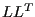
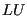
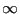

Next: *FRICTION Up: Input deck format Previous: *FLUID SECTION Contents
Keyword type: step
This procedure is used to determine eigenfrequencies and the corresponding eigenmodes of a structure. The frequency range of interest can be specified by entering its lower and upper value. However, internally only as many frequencies are calculated as requested in the first field beneath the *FREQUENCY keyword card. Accordingly, if the highest calculated frequency is smaller than the upper value of the requested frequency range, there is no guarantee that all eigenfrequencies within the requested range were calculated. If the PERTURBATION parameter is used in the *STEP card, the load active in the last *STATIC step, if any, will be taken as preload. Otherwise, no preload will be active.
There are five optional parameters SOLVER, STORAGE, GLOBAL, CYCMPC and ALPHA. SOLVER specifies which solver is used to perform a decomposition of the linear equation system. This decomposition is done only once. It is repeatedly used in the iterative procedure determining the eigenvalues. The following solvers can be selected:
Default is the first solver which has been installed of the following list: SGI, PaStiX, PARDISO, SPOOLES and TAUCS. If none is installed, no eigenvalue analysis can be performed.
The SGI solver should by now be considered as outdated.SPOOLES is very fast, but has no
out-of-core capability: the size of systems you can solve is limited by your
RAM memory. With 32GB of RAM you can solve up to 1,000,000 equations. TAUCS is
also good, but my experience is limited to the  
If the MATRIXSTORAGE option is used, the stiffness and mass matrices are stored in files jobname.sti and jobname.mas, respectively. These are ASCII files containing the nonzero entries (occasionally, they can be zero; however, none of the entries which are not listed are nonzero). Each line consists of two integers and one real: the row number, the column number and the corresponding value. The entries are listed column per column. In addition, a file jobname.dof is created. It has as many entries as there are rows and columns in the stiffness and mass matrix. Each line contains a real number of the form “a.b”. Part a is the node number and b is the global degree of freedom corresponding to selected row. Notice that the program stops after creating these files. No further steps are treated. Consequently, *FREQUENCY, SOLVER=MATRIXSTORAGE only makes sense as the last step in a calculation.
The parameter STORAGE indicates whether the eigenvalues, eigenmodes, mass and stiffness matrix should be stored in binary form in file jobname.eig for further use in a *MODAL DYNAMICS, *STEADY STATE DYNAMICS or *SENSITIVITY procedure. Default is STORAGE=NO. Specify STORAGE=YES if storage is requested.
The parameters GLOBAL and CYCMPC only make sense in the presence of SOLVER=MATRIXSTORAGE. GLOBAL indicates whether the matrices should be stored in global coordinates, irrespective of whether a local coordinates system for any of the nodes in the structure was defined. Default is GLOBAL=YES. For GLOBAL=NO the matrices are stored in local coordinates and the directions in file jobname.dof are local directions. Notice that the GLOBAL=NO only works if no single or multiple point constrains were defined and one and the same coordinate system was defined for ALL nodes in the structure. The second parameter (CYCMPC) specifies whether any cyclic multiple point constraints should remain active while assembling the stiffness and mass matrix before storing them. Default is CYCMPC=ACTIVE. CYCMPC=INACTIVE means that all cyclic MPC's and any other MPC's containing dependent nodes belonging to cyclic MPC's are removed before assembling the matrices. The CYCMPC parameter only makes sense if GLOBAL=YES, since only then are MPC's allowed.
The parameter ALPHA is only needed if the user wants to check the effect of
selective mass scaling in an explicit dynamics calculation for the same
structure. The maximum time step in a explicit dynamics calculation is
governed by the time a wave needs to travers the smallest element in the
mesh. This time can be increased by applying selective mass scaling, which
manipulates the element mass matrices by drawing the mass onto the diagonal
without changing it global value [73], [23]. Still, this procedure may change the
eigenfrequencies and eigenmodes of the structure, which may not be
desirable. To check this, the user can simulate the mass scaling by defining a
value for the numerical damping  and the minimum desired time step in
the explicit dynamics calculation as the fourth argument underneath
*FREQUENCY. Specifying a strictly positive value of the time step
automatically leads to selective mass scaling. ALPHA takes a value between -1/3 and 0. It controls the dissipation of the high frequency
response: lower numbers lead to increased numerical damping
([65], [24]). The default value is -0.05.
and the minimum desired time step in
the explicit dynamics calculation as the fourth argument underneath
*FREQUENCY. Specifying a strictly positive value of the time step
automatically leads to selective mass scaling. ALPHA takes a value between -1/3 and 0. It controls the dissipation of the high frequency
response: lower numbers lead to increased numerical damping
([65], [24]). The default value is -0.05.
For the iterative eigenvalue procedure ARPACK [51] is used. The eigenfrequencies are always stored in file jobname.dat.
At the start of a frequency calculation all single point constraint boundary conditions, which may be zero due to previous steps, are set to zero.
First line:

).
Example: *FREQUENCY 10
requests the calculation of the 10 lowest eigenfrequencies and corresponding eigenmodes.
Example files: beam8f, beamf, beamfsms, segmenttetsms.